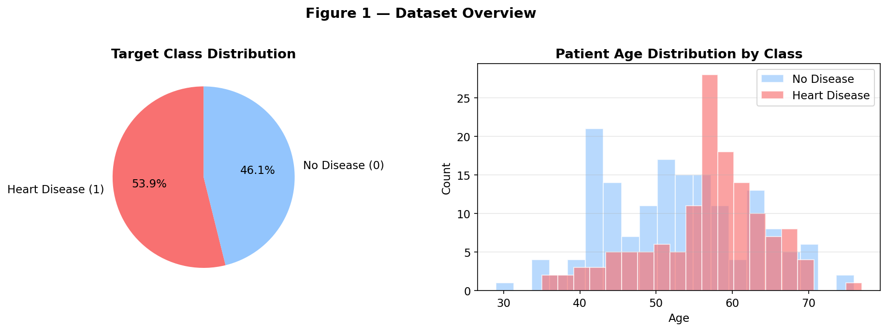
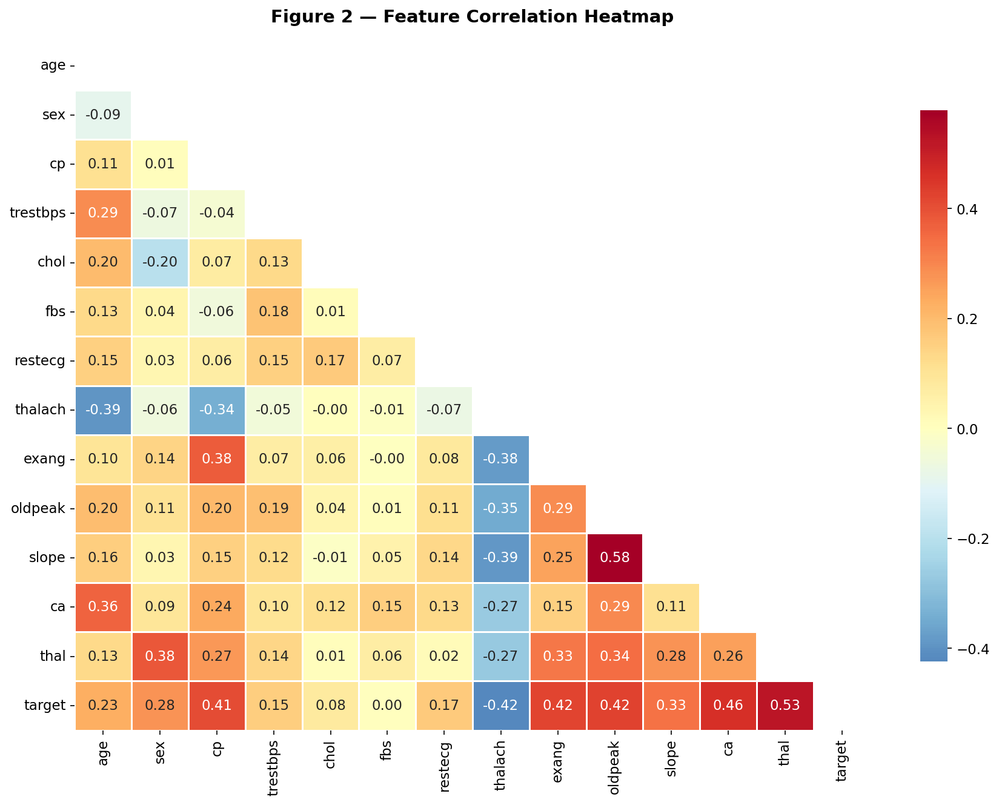
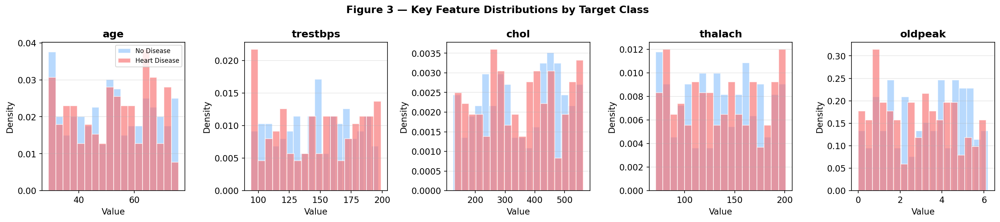
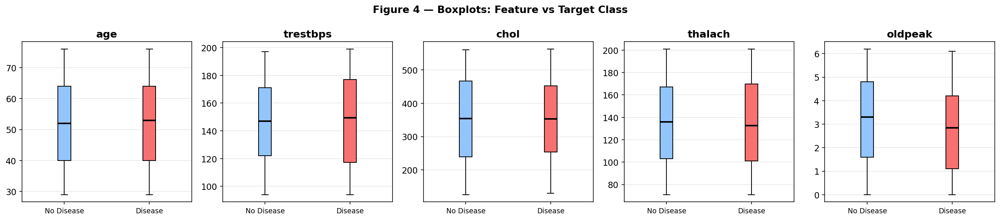
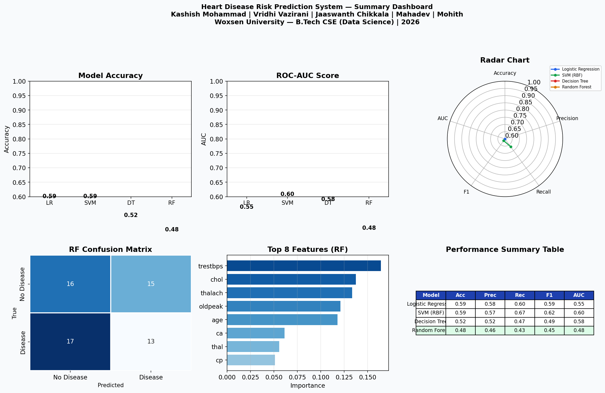
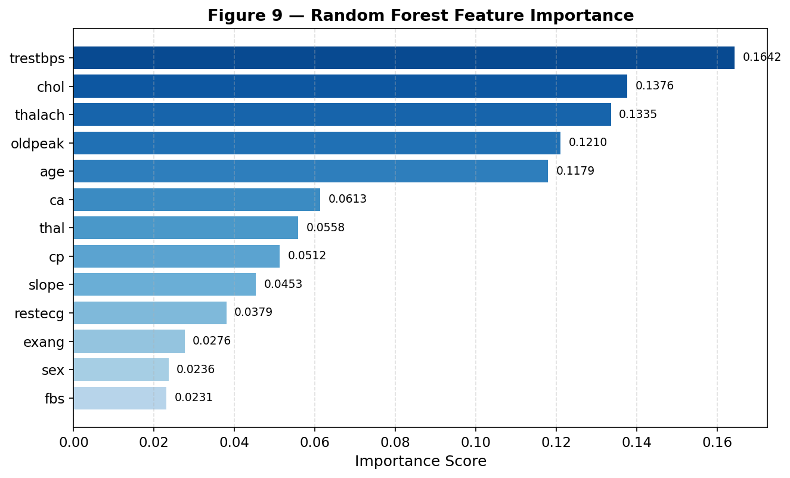
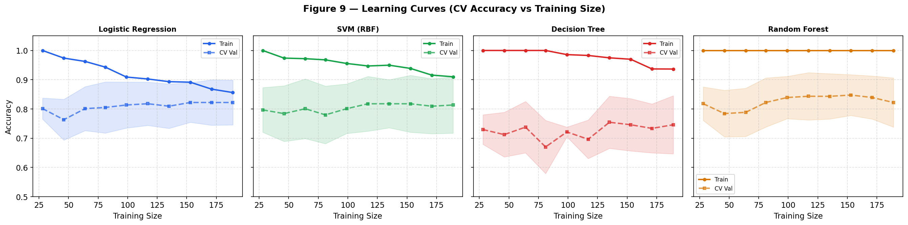
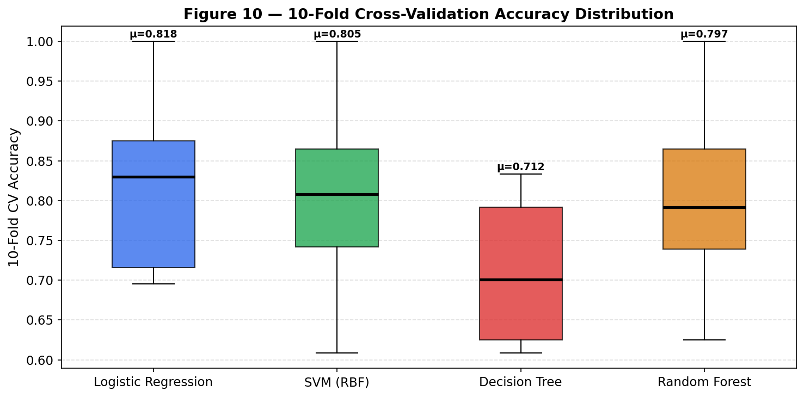
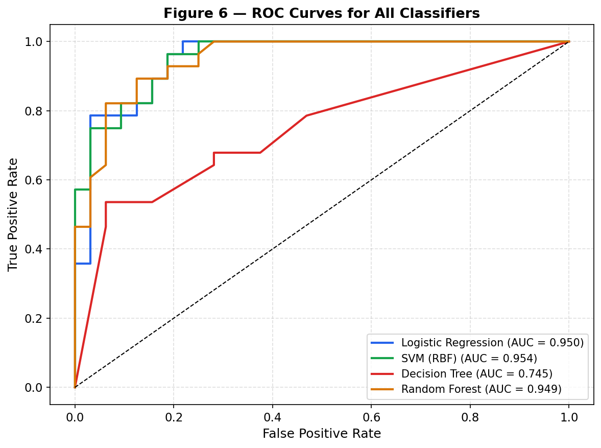

Patient Diagnostics
Enter clinical parameters for instant AI-driven heart disease risk assessment.
Clinical Parameters
Diagnostic Results
Dataset Overview

Distribution of target classes and age histograms showing prevalence of heart disease across the population dataset.
Feature Correlation Heatmap

Pearson correlation matrix revealing statistical relationships between clinical variables and heart disease presence.
Continuous Feature Distributions

Density plots comparing the distributions of key continuous features (Age, Blood Pressure, Cholesterol, Heart Rate) between positive and negative classes.
Outlier Detection Boxplots

Box-and-whisker plots highlighting the interquartile ranges and statistical outliers for key vascular metrics.
Executive Summary Dashboard

High-level view of all ML experiments including Radar Charts, Accuracy comparisons, and metric tables.
Random Forest Feature Importance

Gini importance ranking computed by the best-performing Random Forest algorithm. Highlights `thalach` and `cp` as major predictive factors.
Model Learning Curves

Training vs Validation accuracy across different sample sizes indicating bias/variance tradeoffs.
Cross-Validation Stability

Accuracy variance across 10-fold stratified cross-validation testing. Random Forest showed the most robust generalization.
ROC-AUC Curves

True Positive Rate vs False Positive Rate indicating the discriminatory power of each classifier.